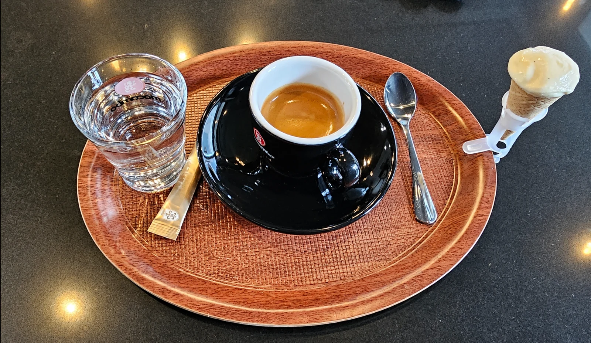
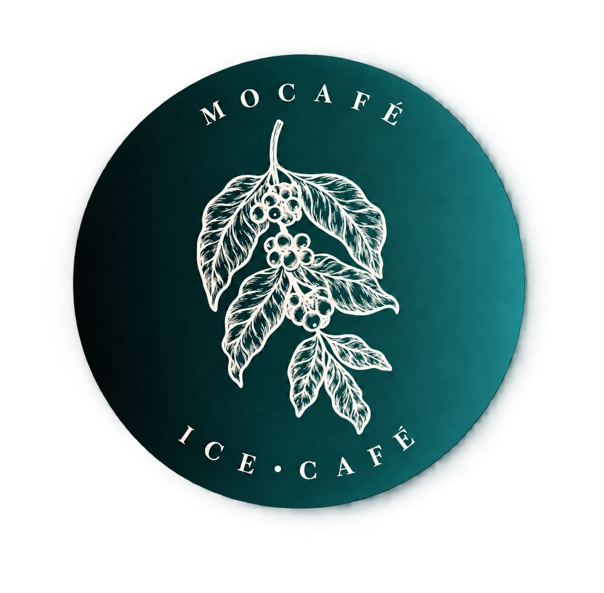
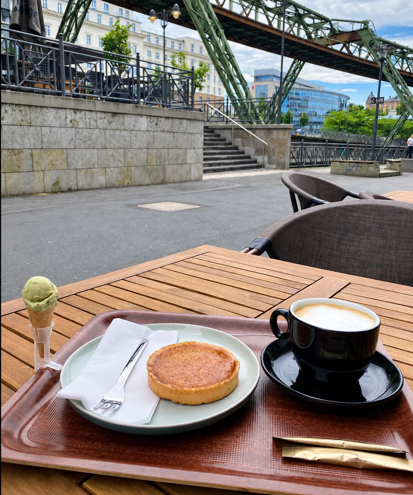
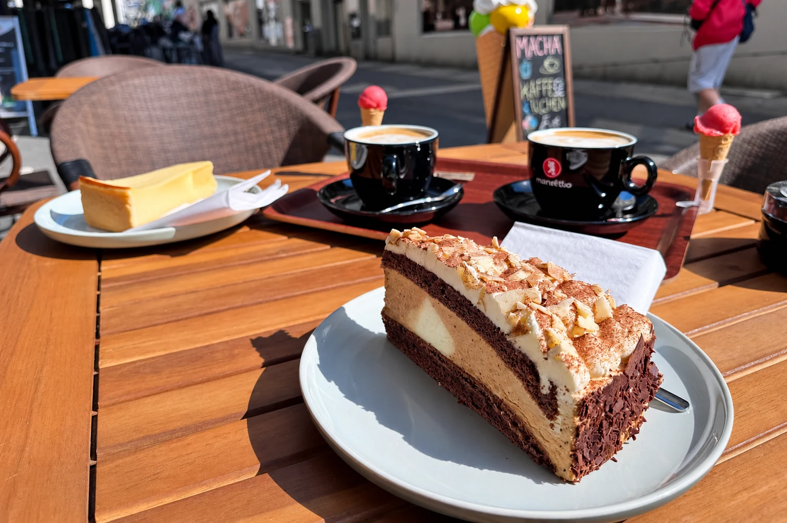
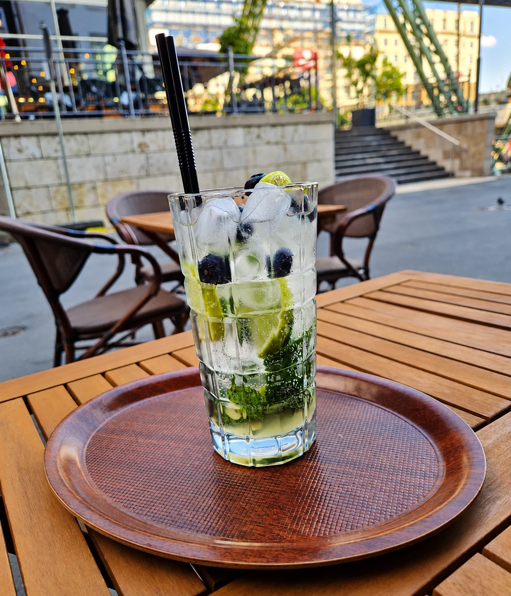
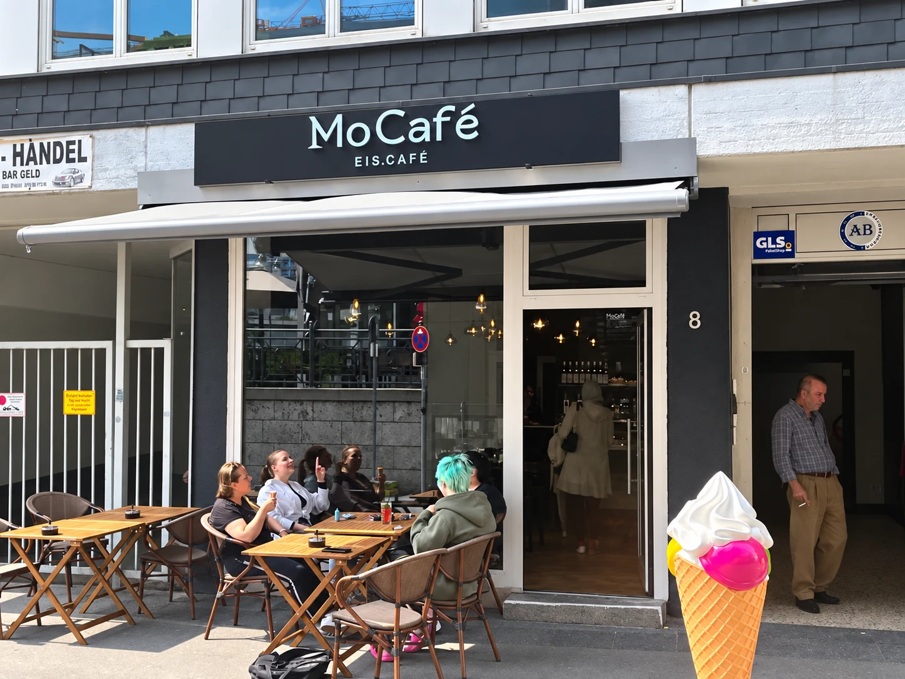
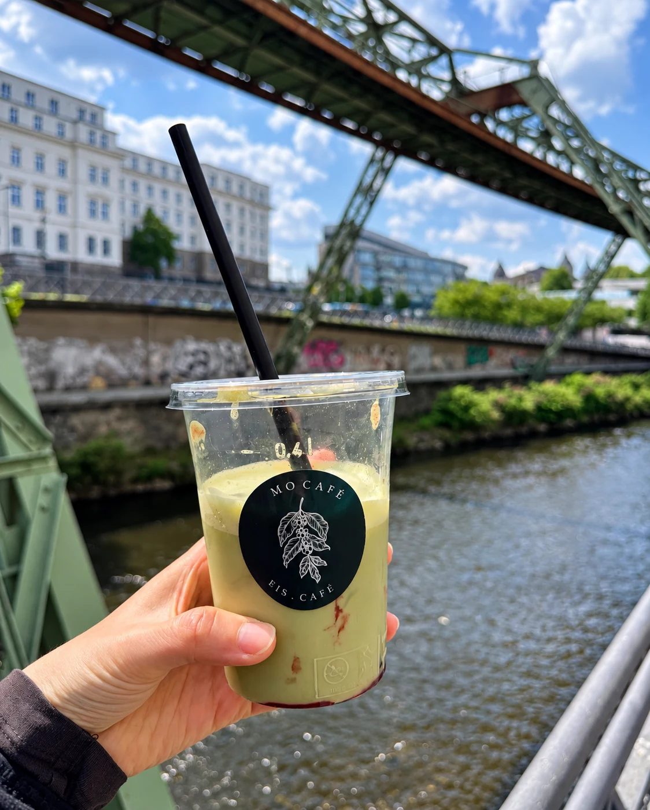
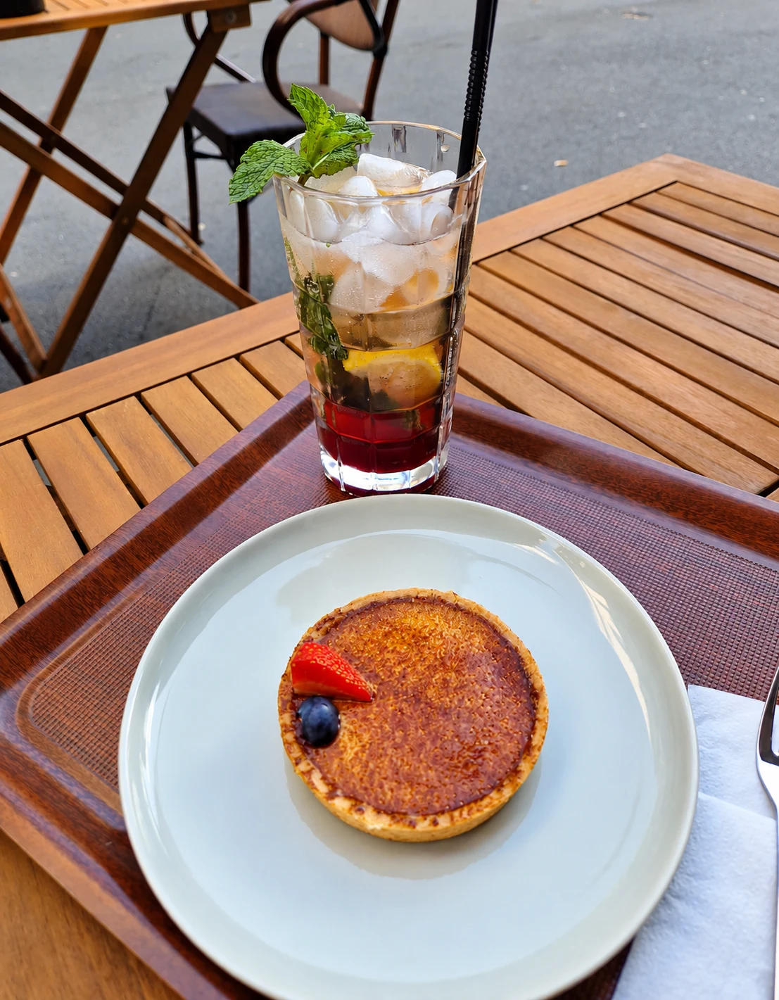
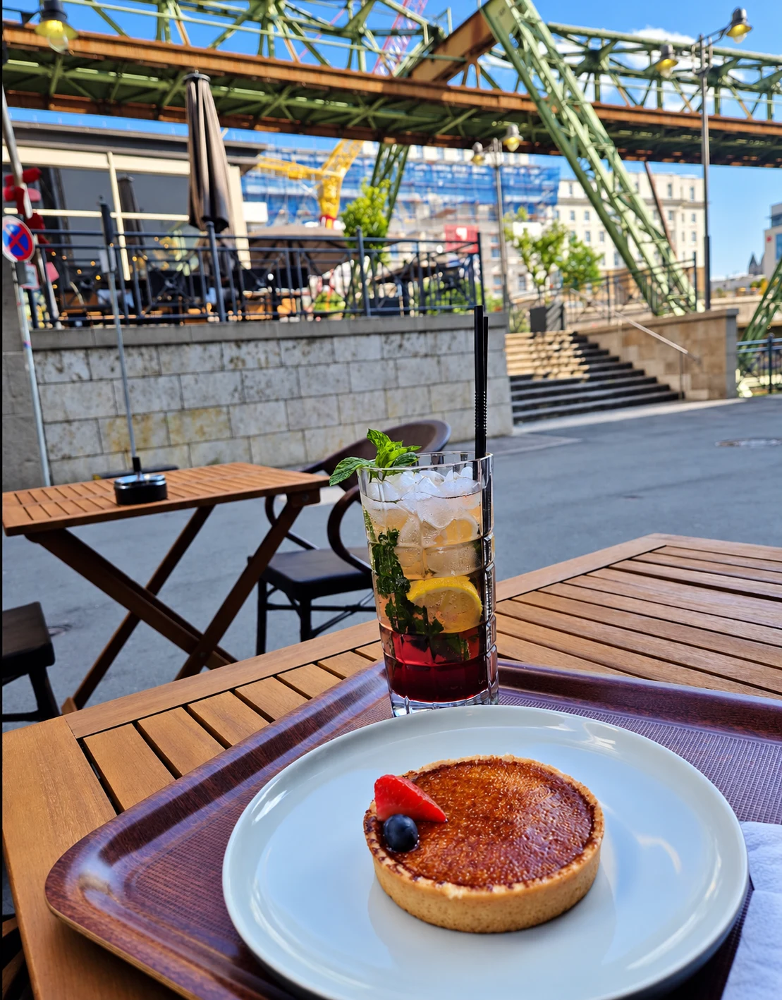
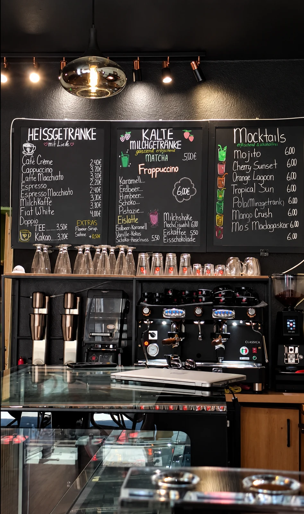

01 / KAFFEEFür deinen Kaffeemoment.
Espresso, Cappuccino oder Latte Macchiato.
Deine Pause beginnt mit einer Tasse.

MoCaféEIS · CAFÉ · WUPPERTALDEIN CAFÉ AN DER WUPPER
Mitten in Wuppertal. Direkt an der Wupper.
Für Kaffee, Kuchen und ein bisschen
Zeit für dich.

KLEINE DINGE. GROSSE FREUDE.
Ob der erste Espresso, ein Stück Kuchen
oder etwas herrlich Erfrischendes –
mach es dir bei uns
gemütlich.

01 / KAFFEEEspresso, Cappuccino oder Latte Macchiato.
Deine Pause beginnt mit einer Tasse.

02 / KUCHEN & EISKuchen, kleine Tartes und Eis.
Weil etwas Süßes einfach dazugehört.

03 / KALTE DRINKSMocktails, Matcha und kalte Milchgetränke.
Für kleine Erfrischungen zwischendurch.
SO SIEHT EINE GUTE PAUSE AUS





LIEBE WORTE VON UNSEREN GÄSTEN
Ich war da bis jetzt 2x und ich liebe die Getränke. Beide waren super lecker und die Mitarbeiter waren so freundlich. Es ist nur schade dass der Laden etwas abseits liegt, weil ich würde mir wünschen dass mehr Leute kommen würden.
Ich hatte einmal den Iced Coffee Strawberry und den Iced Latte Strawberry.
Ich habe in diesem Café gelernt und fand es wirklich sehr angenehm. Der Service war sehr freundlich und aufmerksam; man fühlt sich sofort willkommen. Die Atmosphäre ist ruhig und entspannend, ideal zum Lernen oder einfach zum Abschalten. Das Café ist sehr schön gestaltet und bietet tolle Preise.
Insgesamt ein wunderbarer Ort, den definitiv mehr Menschen entdecken sollten!
Kleines Café direkt an der Wupper.
Ich habe einen Cappuccino getrunken und war
begeistert, daß es anstelle des eingepackten üblichen Keks, ein Mini Hörnchen mit einer
kleinen Kugel selbstgemachten Schokoladeneis gab. Sehr freundliche Bedienung.
Sehr freundlicher Service, günstige Preise und tolles Essen. Hier werde ich definitiv öfter vorbeikommen 🤗 …
Matcha war sehr gut! Der Gastgeber hat uns auch besondere Varianten empfohlen, sehr freundlich und guter Service.
Das Personal war unglaublich freundlich und aufmerksam. Der Cappuccino war perfekt und die Apfeltarte war fantastisch. Zum Abschluss habe ich noch ein Eis gegessen (Pistazie und Haselnuss – 10/10). Auch der Sitzbereich draußen ist sehr schön. Ich komme auf jeden Fall wieder! 🤗
Ein tolles Café direkt hinter dem Hauptbahnhof! Auch die Preise für Kaffee und Kuchen sind sehr günstig!
Ich war heute mit meiner Cousine da und wir wurden sehr gut Empfangen.Sehr geschmackvolles Eis.Verkäufer war auch sehr lieb.Freuen uns auf weitere Besuche
WIR FREUEN UNS AUF DICH
Ein Kaffee nach dem Stadtbummel, eine Pause
an der Wupper oder ein süßer Nachmittag.
An Feiertagen können die Zeiten abweichen.